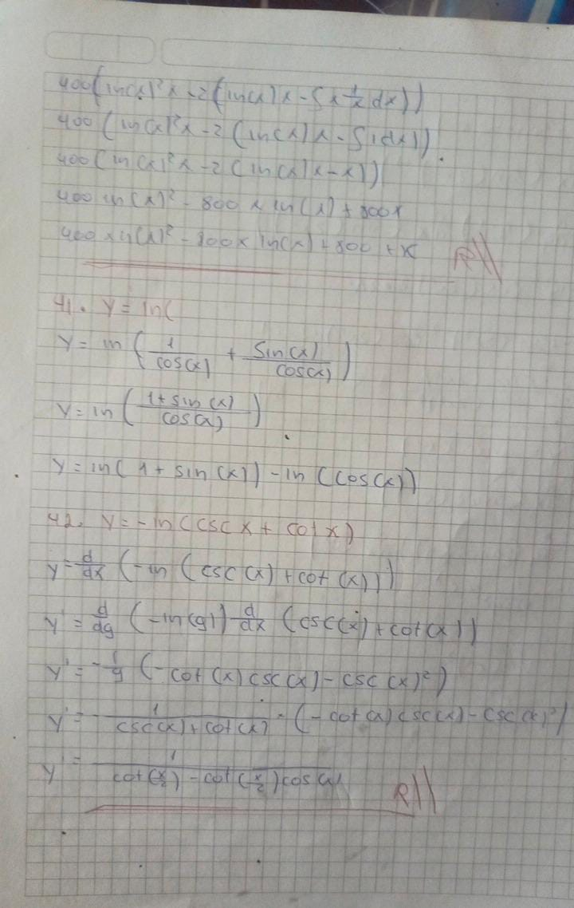
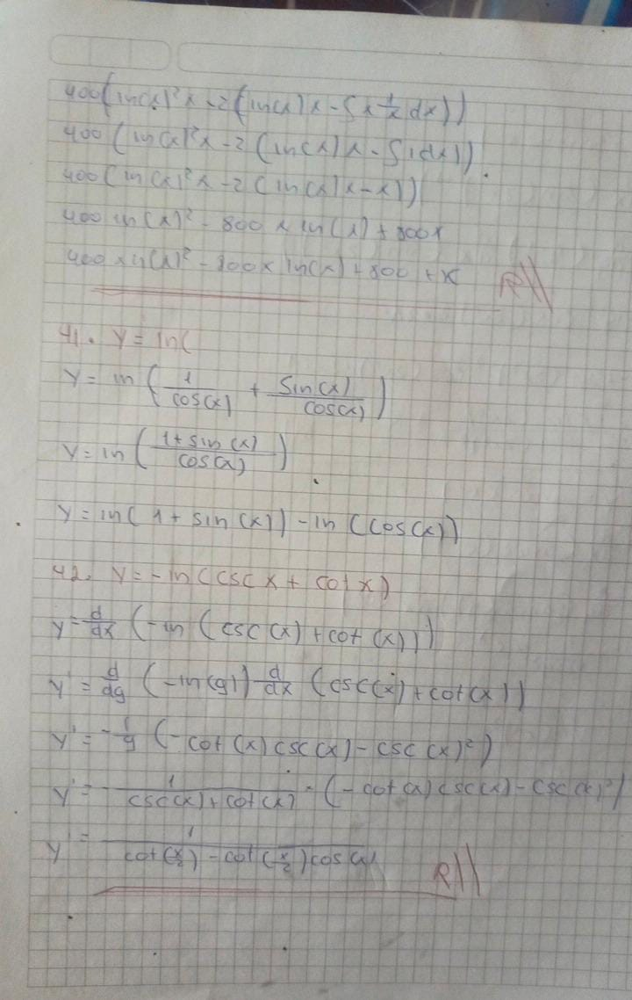

Métodos de Integración
El método de integración es una técnica utilizada para encontrar la integral de una función, que puede interpretarse como el área bajo la curva de esa función. Hay varios métodos de integración, cada uno adecuado para diferentes tipos de funciones.
Métodos:
-
1. Integración por Sustitución
Este método se utiliza para simplificar la integral mediante un cambio de variable. Es útil cuando la integral involucra una función compuesta.
Procedimiento:
- Elige una sustitución \( u = g(x) \) que simplifique la integral.
- Reemplaza la función original y su diferencial en términos de \( u \).
- Integra en términos de \( u \) y luego regresa a la variable original.
Ejemplo:
\[
\int 2x \cdot e^{x^2} \, dx
\]
Usando \( u = x^2 \), entonces \( du = 2x \, dx \). La integral se convierte en:
\[
\int e^u \, du
\]
-
2. Integración por Partes
Este método se basa en la fórmula de integración por partes derivada de la regla del producto para derivadas.
Fórmula:
\[
\int u \, dv = uv - \int v \, du
\]
Donde \( u \) y \( dv \) son partes de la integral original.
Ejemplo:
\[
\int x \cdot e^x \, dx
\]
Elegimos \( u = x \) y \( dv = e^x \, dx \). Entonces, \( du = dx \) y \( v = e^x \). Aplicando la fórmula:
\[
\int x \cdot e^x \, dx = x \cdot e^x - \int e^x \, dx = x \cdot e^x - e^x + C
\]
-
3. Integración por Fracciones Parciales
Este método se utiliza para integrar fracciones racionales (cocientes de polinomios). La idea es descomponer la fracción en una suma de fracciones más simples.
Procedimiento:
- Descompón la fracción racional en fracciones parciales.
- Integra cada fracción por separado.
Ejemplo:
\[
\int \frac{2x + 3}{(x - 1)(x + 2)} \, dx
\]
Descomponemos en fracciones parciales:
\[
\frac{2x + 3}{(x - 1)(x + 2)} = \frac{A}{x - 1} + \frac{B}{x + 2}
\]
Encontramos \( A \) y \( B \) y luego integramos cada término.
Integrales Indefinidas
Definición:
La integral indefinida de una función \( f(x) \) es una función que representa la antiderivada de \( f(x) \). Se denota por:
\[
\int f(x) \, dx
\]
El resultado de una integral indefinida es una familia de funciones \( F(x) \) cuya derivada es \( f(x) \). Esta familia incluye una constante arbitraria \( C \), porque la derivada de una constante es cero. Por lo tanto, la integral indefinida se expresa generalmente como:
\[
\int f(x) \, dx = F(x) + C
\]
Ejemplo:
\[
\int 3x^2 \, dx
\]
Para encontrar la antiderivada, integramos cada término:
\[
\int 3x^2 \, dx = x^3 + C
\]
Aquí, \( F(x) = x^3 \) es una antiderivada de \( 3x^2 \), y \( C \) es la constante de integración.
Integrales Definidas
Definición:
La integral definida de una función \( f(x) \) en un intervalo \([a, b]\) se usa para calcular el área bajo la curva de \( f(x) \) entre \( x = a \) y \( x = b \). Se denota por:
\[
\int_{a}^{b} f(x) \, dx
\]
El resultado de una integral definida es un número que representa el área neta bajo la curva \( f(x) \) desde \( a \) hasta \( b \). Este cálculo se basa en el Teorema Fundamental del Cálculo, que establece que si \( F(x) \) es una antiderivada de \( f(x) \), entonces:
\[
\int_{a}^{b} f(x) \, dx = F(b) - F(a)
\]
Ejemplo:
\[
\int_{1}^{3} 2x \, dx
\]
Primero, encontramos la antiderivada de \( 2x \):
\[
\int 2x \, dx = x^2 + C
\]
Luego, evaluamos \( x^2 \) en los límites \( a = 1 \) y \( b = 3 \):
\[
\int_{1}^{3} 2x \, dx = \left[ x^2 \right]_{1}^{3} = 3^2 - 1^2 = 9 - 1 = 8
\]
El área bajo la curva de \( 2x \) desde \( x = 1 \) hasta \( x = 3 \) es 8.
Área Bajo la Curva
Para calcular el área bajo una curva definida por una función \( f(x) \) en un intervalo \([a, b]\), se usa la integral definida de \( f(x) \) en ese intervalo:
\[
\text{Área} = \int_{a}^{b} f(x) \, dx
\]
Ejemplo:
Calcular el área bajo la curva de \( f(x) = x^2 \) desde \( x = 1 \) hasta \( x = 3 \):
\[
\text{Área} = \int_{1}^{3} x^2 \, dx
\]
Primero, encontramos la antiderivada de \( x^2 \):
\[
\int x^2 \, dx = \frac{x^3}{3} + C
\]
Luego, evaluamos en los límites \( a = 1 \) y \( b = 3 \):
\[
\text{Área} = \left[ \frac{x^3}{3} \right]_{1}^{3} = \frac{3^3}{3} - \frac{1^3}{3} = \frac{27}{3} - \frac{1}{3} = 9 - \frac{1}{3} = \frac{26}{3}
\]
Volumen de un Sólido de Revolución
Para calcular el volumen de un sólido generado al rotar una región alrededor de un eje, se usan dos métodos comunes:
Método de Discos (o Cilindros):
Este método se utiliza cuando el sólido se forma rotando la región alrededor del eje horizontal. La fórmula general es:
\[
V = \pi \int_{a}^{b} [f(x)]^2 \, dx
\]
Donde \([f(x)]^2\) es el radio del disco al cuadrado.
Ejemplo:
Calcular el volumen del sólido obtenido al rotar la región bajo \( f(x) = x \) desde \( x = 0 \) hasta \( x = 2 \) alrededor del eje \( x \):
\[
V = \pi \int_{0}^{2} (x)^2 \, dx
\]
Encontramos la antiderivada:
\[
\int x^2 \, dx = \frac{x^3}{3} + C
\]
Evaluamos en los límites:
\[
V = \pi \left[ \frac{x^3}{3} \right]_{0}^{2} = \pi \left( \frac{2^3}{3} - \frac{0^3}{3} \right) = \pi \left( \frac{8}{3} \right) = \frac{8\pi}{3}
\]
Ejercicios en clase
 
